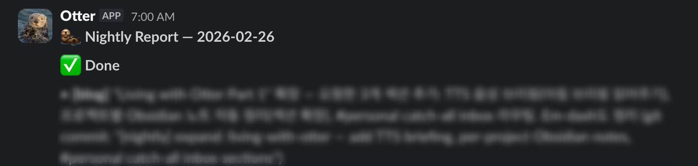
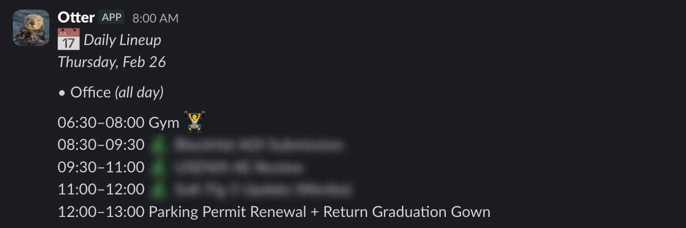
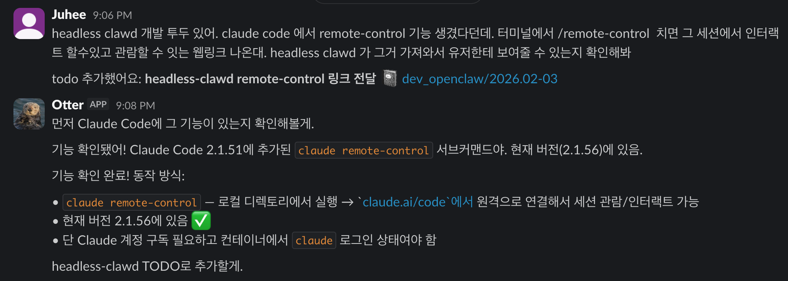
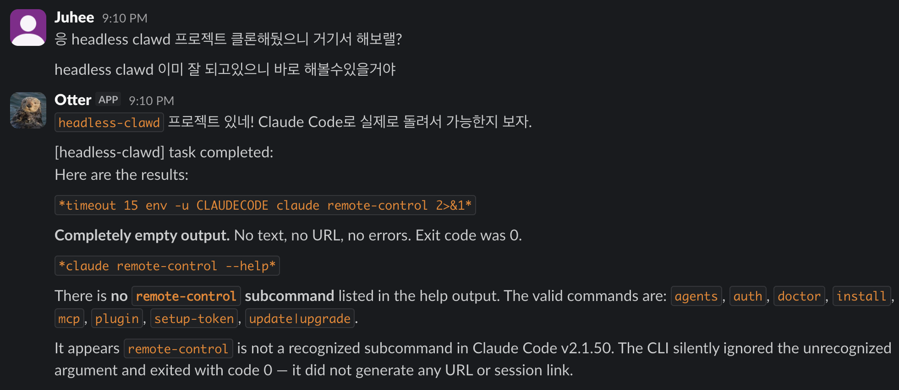
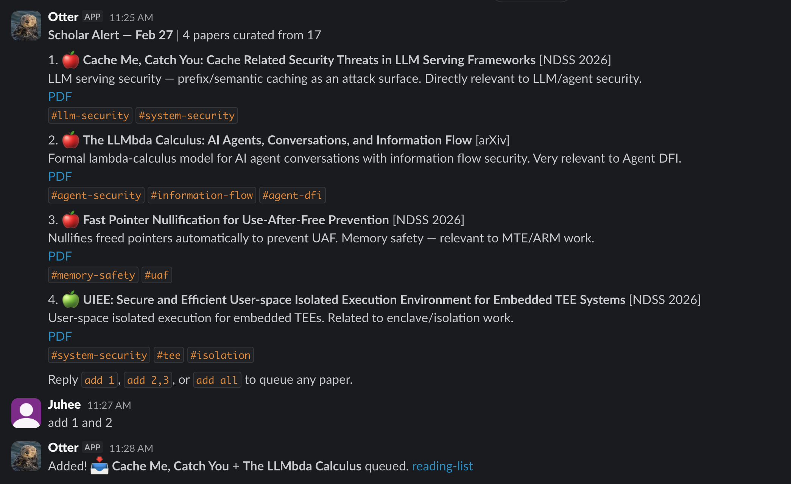
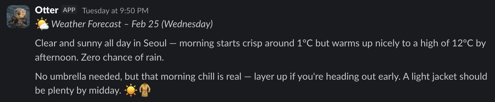

Living with Otter, my personal AI assistant
Last summer, during my internship at Meta, I heard security people saying that fully autonomous AI agents were still some time away. The fundamental security issues had not been solved, and the industry was being cautious.
Then OpenClaw just dropped. It fetches external data and acts on user’s private data at the same time. It is indeed dangerous, but I tried it anyway, and I found it quite useful.
I hatched Otter a week ago. Otter is my personal OpenClaw agent. It runs on my desktop, connects to Slack, and has access to my calendar, email, and files.
Setup
- OpenClaw: The core framework. Runs Claude as a long-running agent on my desktop.
- Slack: The interface. Separate channels for different purposes:
#personal,#research,#blog,#dev-openclaw. - Obsidian: I already used this for research notes. I created an
OpenClaw/folder inside the vault and wrote aSkillto manage notes and todos there. - Headless-Clawd: A plugin (by @threeearcat, currently private) that runs Claude Code, sandboxed inside Docker containers. Otter can write and run code, edit files, and commit to git autonomously.
- gog: A CLI tool that uses my Google OAuth. Gives Otter access to Gmail, Google Drive, and Google Calendar.
- Crons: Scheduled jobs, incluing Morning report, weather alert, nightly work, and more.
systemd.timer and HEARTBEAT.md: Periodic checks that run in the background and notify me when something needs attention.
My Day with Otter
🌅 7 AM, morning report
Every morning, Otter sends a text summary of what it worked on overnight, what still needs doing, and anything that requires my input. It also sends a TTS audio version, so I can listen on my commute.

📅 8 AM, calendar briefing
At 8 AM, a short Slack message lays out the day. Meetings, focus blocks, anything on the calendar. Focus block is marked with 🌲. I can overview what the day looks like from slack, without visiting calendar.google.com.

🔬 10 AM, research brainstorming
I open a Slack channel for research project and talk through whatever I am working on. Ideas, deadlines, and things I need to track down. As the conversation goes, Otter picks up todo items and research notes and writes them to the right Obsidian file.

💻 12 PM, lunch break and headless clawd
Waiting for coffee at a cafe. I pull out my phone, open Slack, and describe a task to Otter. Something like running an analysis, fixing a bug, or drafting a document. Otter hands it off to headless-clawd, Claude Code running in a Docker container on my desktop.

Being able to get work done without sitting at my computer was something I really wanted. This is exactly that.
📚 4 PM, paper recommendations
Google Scholar sends me email for paper recommendation. A script runs every 30 minutes to check Gmail for new Scholar alerts. When one arrives, it parses the email and wakes Otter via a POST to /hooks/wake. Otter then filters the papers by relevance to my research and posts a curated list to my #reading channel with a short description and tags for each paper.

🌙 10 PM, weather forecast
Every night around 10 PM, Otter sends the next day’s forecast for Seoul. Temperature range, conditions, and what to wear. Unlike a weather app, it pushes the information to me so I do not have to think to open it.

🦦 3 AM, nightly work
While I sleep, Otter works through the todo queue. Writing drafts, organizing notes, running code experiments, committing results to git. What it did overnight gets compiled into the morning report and delivered at 7 AM.
Otter working alone is not perfect. It makes mistakes, misses context, and sometimes does things I need to redo. But the biggest benefit I have noticed is, it starts things. On my own, I would have delayed those tasks for weeks or never gotten around to them at all. Getting started is the hardest part, and Otter does that.
Things I Noticed
Productive, or just feels that way? When AI agents started appearing, I had both excitement and skepticism. Would they actually change how I work, or just add noise? After a few weeks with OpenClaw, I at least feel more productive. Whether that is real, I cannot say yet. I plan to write a follow-up on specific features I have added to push things further.
More output, more review. The more I delegate, the more Otter produces. Notes, commits, Slack messages. This is the same cognitive burden that shows up with coding agents: the agent writes more code, so there is more code to review. A METR study on experienced open-source developers (using early 2025 models) found that using AI tools made developers 19% slower overall. More output from the AI means more to read, verify, and fix. Delegation does not always reduce effort.
Debugging is harder. I have a separate post planned on this. Briefly, agentic systems are non-deterministic, which makes bugs harder to isolate. OpenClaw itself is a large codebase, and when something goes wrong it is not always clear whether it is a code bug or the AI making a bad judgment call. If you go hunting for a code bug and it turns out the AI just made a mistake, you can spend a long time looking at completely the wrong thing.
On Security
An OpenClaw agent has access to your files, calendars, and the ability to act on your behalf. Technically, something like this has been possible for a while. But there was no usable form of it until OpenClaw showed up.
Then, OpenClaw dropped, and it went viral. Moltbook, an internet forum where AI agents post, started filling up with OpenClaw agents writing their own content. People found it fascinating, and early adopters started running OpenClaw to see what their own agents would do.
The OpenClaw inventor said in an interview:
I’m sure prompt injection is possible, but it’s not as easy as people think it is.
That is probably true today. But as adoption grows, I expect real attacks to follow. After just a few days of use, I can already see many potential attack vectors. There is a lot to study here.
Despite its vulnerabilities, having a real deployed agent fosters more practical security research. Before OpenClaw, agent security was mostly imaginary. With an autonomous agent in tangible form, real problems start to surface.
For now, my protection is mostly prompt-level (there is not even a simple human-in-the-loop confirmation step). I instructed Otter to ask for confirmation before any action that reaches outside my own system, things like sending emails, posting publicly, or messaging other people. All file changes go through git so everything is reversible. Prompt-level defenses provide no security guarantees, but it is what I have for now. The actual solution is a research problem, which is actually what I am working on. There are a few active directions, including my own work on Prompt Flow Integrity and similar concurrent works like FIDES and CaMeL.